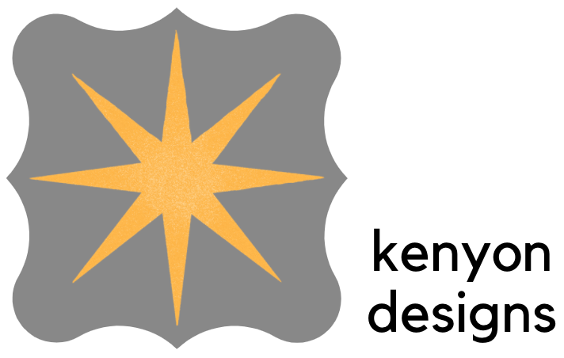

Welsh Auto‑Annotation Tool
Select Vocabulary Levels to Include:
Mynediad (Entry level)
Sylfaen (Foundation level)
Canolradd (Intermediate level)
BBC News Vocab
Welsh Text to Annotate:
Annotate Text
Clear Text
My Vocabulary Study List
📥 Export to XML
Clear Study List
Word / Phrase
Definition Mapping
Curriculum Source
Count
No words saved to study list yet. Tap the [+] inside any translation bubble to start tracking.